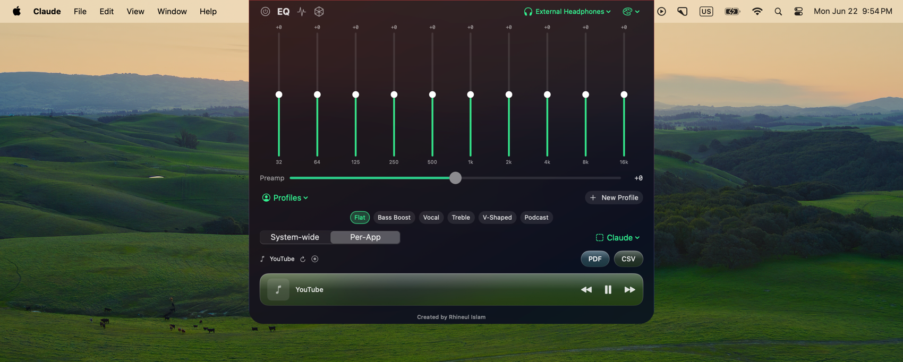
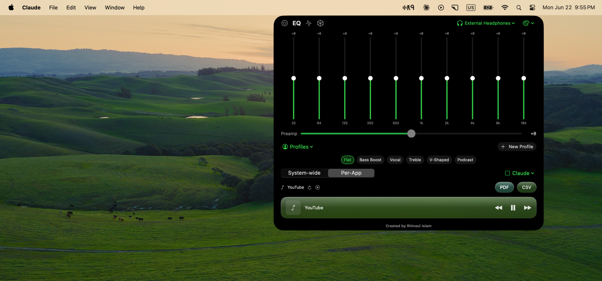
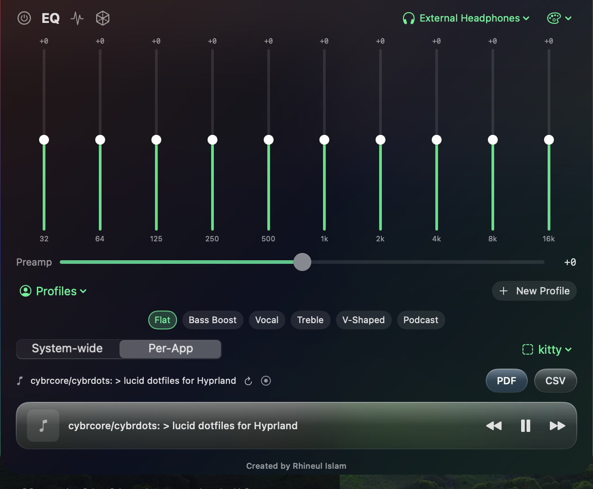
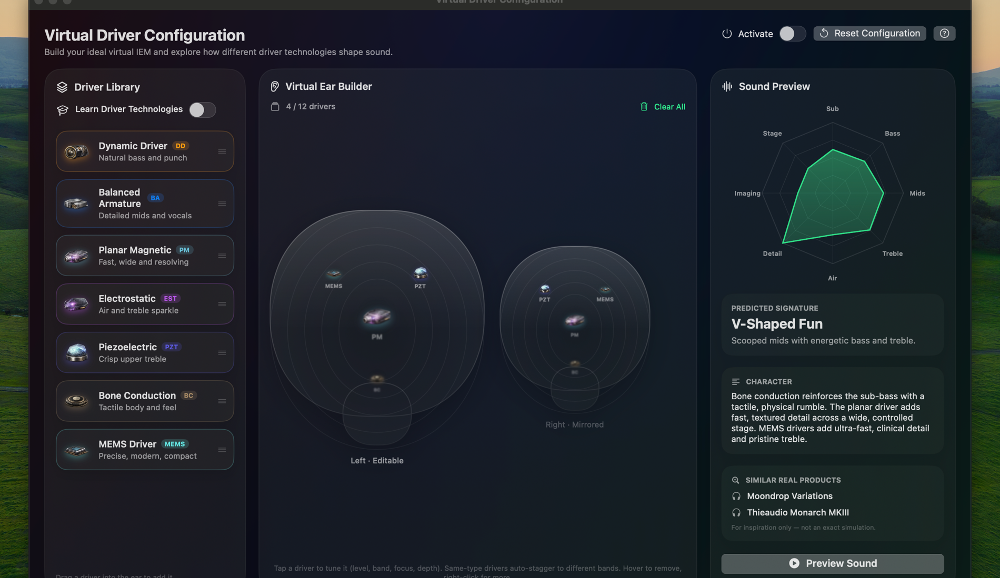
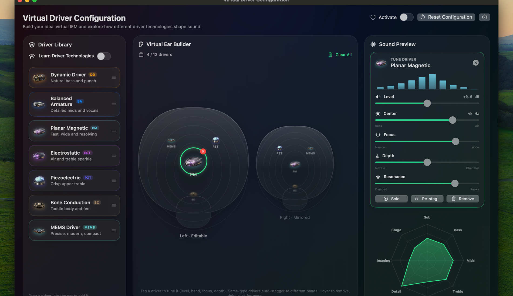
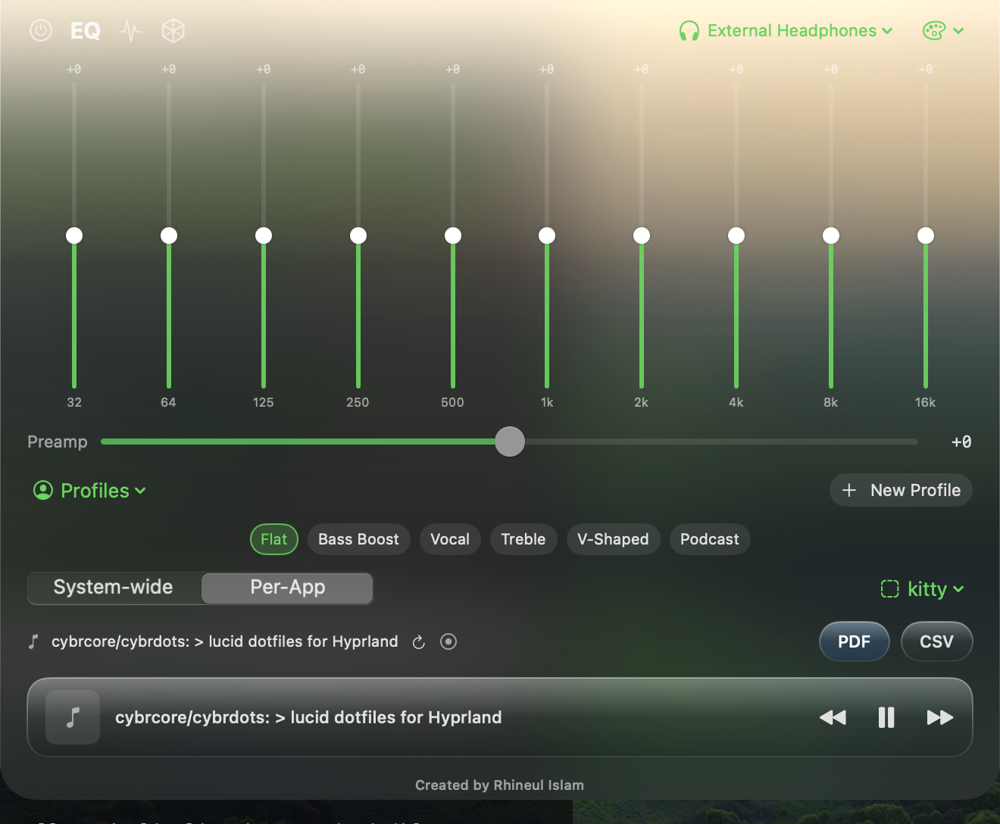

System-wide EQ, native feel
Ten bands (32 Hz → 16 kHz), a draggable response curve, genre and IEM presets, per-app profiles — processing every app's audio in real time through Apple's own Core Audio process-tap engine.


Per-app mode · OLED-friendly System Default theme

Cyberhax — one of four themes
Virtual Driver Configuration
Stack Dynamic, BA, Electrostatic, Planar, MEMS, Piezo and Bone-Conduction drivers into a virtual IEM — then keep the music playing while you build: Live Preview re-voices the sound on every edit, and the new Driver Rack gives each driver a checkbox, mix level and drag-to-reorder channel strip. Save any build straight into the panel's Profiles menu as an EQ preset. Or search the IEM Library: 1,088 real in-ear monitors, including a gold-badged S+ High-End tier of flagship models like the Oriolus Traillii Ti, Vision Ears Erlkönig and oBravo Ra-C-Cu.


Per-driver Level, Center, Focus, Depth & Resonance

The panel follows your theme everywhere
Everything included
Free for the community. No account, no license, no telemetry.
Community song presets
Share your EQ for the song you're playing — anonymously, no login. Browse, apply and up-vote what others shared; auto-load the top-voted preset per song.
PRO parametric EQ
Five filter types per band — high/low pass, shelves, peak — with editable frequency and Q. Drag the nodes Pro-Q style.
10-band system-wide EQ
±12 dB per band with global preamp. Equalizes every app at once — browser, Music, Spotify, games, calls.
Presets & profiles
Flat, Bass Boost, Vocal + 10 genre tunings and IEM-inspired curves. Save, import and export your own profiles.
Floating window
Detach the panel into an always-on-top window you can drag anywhere. Remembers its spot; never auto-closes.
Per-app EQ
Auto-switches to a saved curve whenever a given app comes to the foreground.
S+ High-End IEM Library
1,088 real IEMs with their actual driver setups — crinacle ranking data plus a curated flagship tier from Headfonics & Headphonesty.
DAC & hot-plug aware
Plug in a USB-C dongle or desktop DAC and R9-EQ follows the system output automatically.
Four themes
Liquid Glass, Frosted Glass, true-black System Default and the neon Cyberhax palette — panel and studio alike.
Now-playing bar
Current track with transport controls, right in the panel.
Built-in tours
First-run spotlight tutorials walk you through the panel and the Virtual Driver studio.
Private by design
All processing on-device. Nothing recorded, stored or transmitted.
Install in under a minute
The one-liner avoids browser quarantine entirely, so Gatekeeper never blocks it — on any macOS version.
- Open Terminal (⌘-Space, type “Terminal”), paste the command above, press Return. It downloads the latest release and launches R9-EQ.
- Approve System Audio Recording when macOS asks (System Settings → Privacy & Security). Required — without it the EQ is silent.
- Click the R9 icon in your menu bar and press the power button. Done — every sound on your Mac now runs through the EQ.